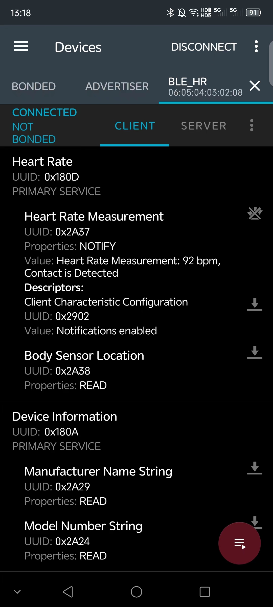

BLE PRF Multi Mode Toggle¶
1 功能概述¶
此项目演示 BLE 从机和 2.4G 分时工作的双模场景，通过pan107x evb板上的按键切换蓝牙模式和私有2.4G模式。蓝牙模式工作的情况下可以用手机app连接，不发2.4G包。私有2.4G模式工作的情况下可以发送和接收2.4G包，不发蓝牙包。
2 环境要求¶
board:
pan107x evbuart(option): 用来显示串口log（波特率921600，选项
8n1）手机app
nrf connect
4 演示说明¶
烧录完成后，设备复位会显示上电log，上电后默认是蓝牙模式：
Try to load HW calibration data.. DONE. - Chip Info : 0x1 - Chip CP Version : 255 - Chip FT Version : 4 - Chip MAC Address : D0000000059D - Chip UID : 9D0500C2F737560338 - Chip Flash UID : 425031563233391700C2F73756033878 - Chip Flash Size : 512 KB (Inc. 4KB Panchip Info Area) - Current Flash Map : +-------------------------+ <- Addr: 0x00000 | App Partition | | (480 KB) | +-------------------------+ <- Addr: 0x78000 | KVStore Partition | | ( 16 KB) | +-------------------------+ <- Addr: 0x7C000 | User Custom Partition | | ( 12 KB) | +-------------------------+ <- Addr: 0x7F000 | Panchip Info Area | | (4 KB, Hidden) | +-------------------------+ <- End : 0x80000 (512 KB) [I] app started [INF] ble stack init start.. [INF] Spark Controller Init Start [INF] BLE Heap size:3844 B, remain:64 B [INF] Spark Controller Init OK [INF] ble host init ok -> ble thread start.. [I] registered service 0x180a with handle=1 [I] registering characteristic 0x2a24 with def_handle=2 val_handle=3 [I] registering characteristic 0x2a25 with def_handle=4 val_handle=5 [I] registering characteristic 0x2a27 with def_handle=6 val_handle=7 [I] registering characteristic 0x2a26 with def_handle=8 val_handle=9 [I] registering characteristic 0x2a28 with def_handle=10 val_handle=11 [I] registering characteristic 0x2a29 with def_handle=12 val_handle=13 [I] registering characteristic 0x2a23 with def_handle=14 val_handle=15 [I] registered service 0x180d with handle=16 [I] registering characteristic 0x2a37 with def_handle=17 val_handle=18 [I] registering characteristic 0x2a38 with def_handle=20 val_handle=21 [INF] Failed to restore IRKs from store; status=8 [W] Device Id Address: D0 00 00 00 05 9D no info [INF] GAP procedure initiated: advertise; [INF] disc_mode=2 [INF] adv_channel_map=0 own_addr_type=0 adv_filter_policy=0 adv_itvl_min=48 adv_itvl_max=208 [I] BLE adv start...
蓝牙模式下可使用手机
nrf connect扫描蓝牙设备名称ble_hr并且连接
nrf connect连接ble_hr¶
按下开发板上的“KEY2”按键切换到2.4G私有模式，切换的LOG如下
[I] prf mode [I] adv stop [INF] GAP procedure initiated: stop advertising.
关闭蓝牙广播，进入到2.4G模式。在2.4G模式下就可以进行数据收发。
按下开发板上的”KEY1“按键切换到蓝牙模式，切换的LOG如下
[I] ble mode [INF] GAP procedure initiated: advertise; [INF] disc_mode=2 [INF] adv_channel_map=0 own_addr_type=0 adv_filter_policy=0 adv_itvl_min=48 adv_itvl_max=208 [I] BLE adv start...
初始化蓝牙广播，进入蓝牙模式。
通过EVB板上的按键可以使两个模式来回切换。
5 开发使用说明¶
5.1ble和prf初始化¶
蓝牙和2.4G初始化流程和文档ble_prf_sample.md中的5.1章节是一样的，此处不再过多描述。
5.2ble和prf切换说明¶
1. 蓝牙模式切换¶
__ramfunc void panchip_prf_ble_resume(void)
{
RF_RefreshPhySeqRAM(1);
PRI_RF_ChipModeSel(PRI_RF, PRF_CHIP_MODE_SEL_BLE);
PHY_ResetChannel();
}
void panchip_multi_ble_mode(void)
{
if(work_mode == ble_work_mode) {
return;
}
work_mode = ble_work_mode;
#if(PRF_TRX_TEST==1)
pan_ant_delete(prf_id);
#endif
panchip_prf_ble_resume();
app_ble_advertise_start();
}
切换蓝牙模式有如下步骤：
将蓝牙的phy seq ram重新刷新一遍
模式寄存器配成蓝牙模式
将蓝牙模式的相关寄存器还原
开启广播
2.4G TX模式下关闭定时事件
2. 2.4G模式切换¶
void panchip_ble_stop(void)
{
if(conn_handle == 0) {
ble_gap_terminate(conn_handle, BLE_ERR_CONN_TERM_LOCAL);
while(connect_stat);
vTaskDelay(50);
}
APP_LOG_INFO("adv stop\n");
ble_gap_adv_stop();
}
void panchip_multi_prf_mode(void)
{
if(work_mode == prf_work_mode) {
return;
}
work_mode = prf_work_mode;
panchip_ble_stop();
#if(PRF_TRX_TEST==1)
prf_id = pan_ant_create(&prf_trx);
panchip_prf_set_trx_mode(tx_config.trx_mode);
panchip_prf_dual_mode_start(&tx_config);
#else
PRI_RF_SetRxWaitTime(PRI_RF, 0);
panchip_prf_set_trx_mode(rx_config.trx_mode);
panchip_prf_dual_mode_start(&rx_config);
#endif
}
切换2.4G模式有如下步骤：
将BLE停止工作。广播状态下停止广播，连接状态下先主动断连然后停止广播。
模式寄存器配成2.4G模式
配置2.4G相关寄存器
2.4G TX模式下打开定时事件